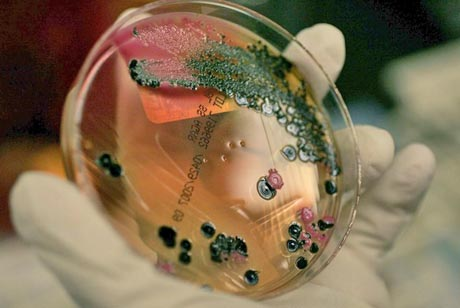

Salmonella
About
Salmonella germs can live in the intestinal tract of many different animals. Salmonellosis (sal-mohn-el-OH-sis) is a bacterial disease caused by the bacterium Salmonella. Most people have diarrhea, fever, and stomach pain that start 1 to 3 days after they get infected. These symptoms usually go away after 1 week. Sometimes, people have to see a health care provider or go to the hospital because the diarrhea is severe or the infection has spread from the intestines to the blood stream, and then to other body sites.
Species Affected
These include reptiles (turtles, snakes, and lizards), amphibians (frogs and toads), and poultry (chicks, chickens, ducks ducklings, geese, turkeys). Also, pocket pets (guinea pigs and rodents like hamsters), dogs, cats, birds (including pet and wild birds), horses, and farm animals (goats, calves, sheep) can pass Salmonella to people.
Additional Information
Infected Meat
Bacteria in Animals
Diseases brought about by bacteria’s
in the animals body have been rampantly spreading.
Salmonella Pictomicrograph
Bacteria in Animals
Diseases brought about by bacteria’s
in the animals body have been rampantly spreading.
See Video
Back